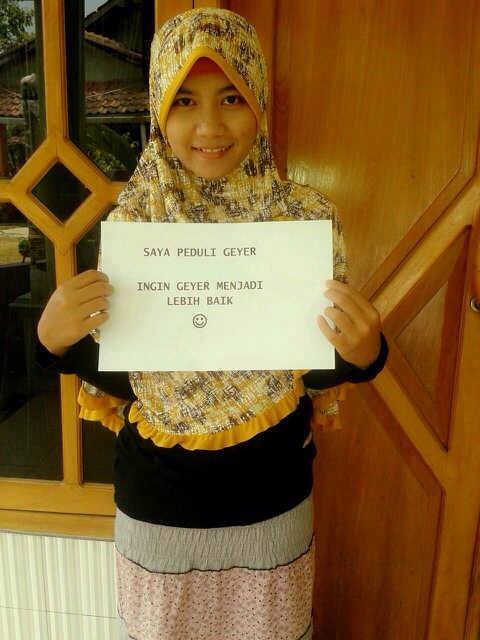
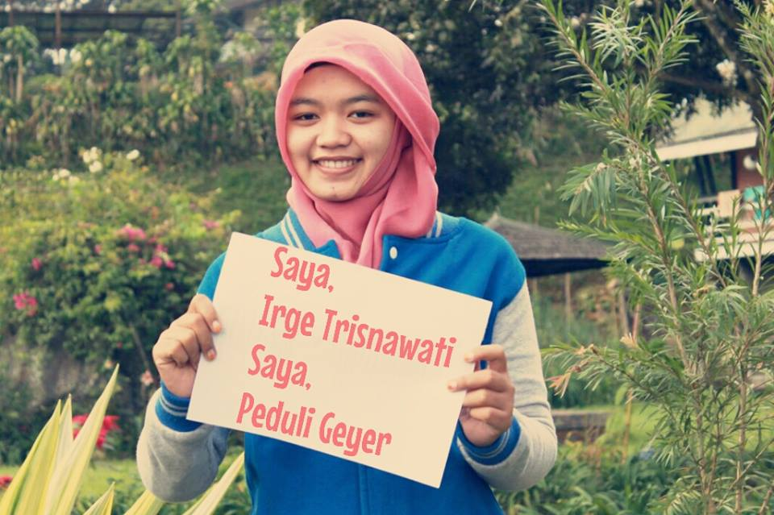
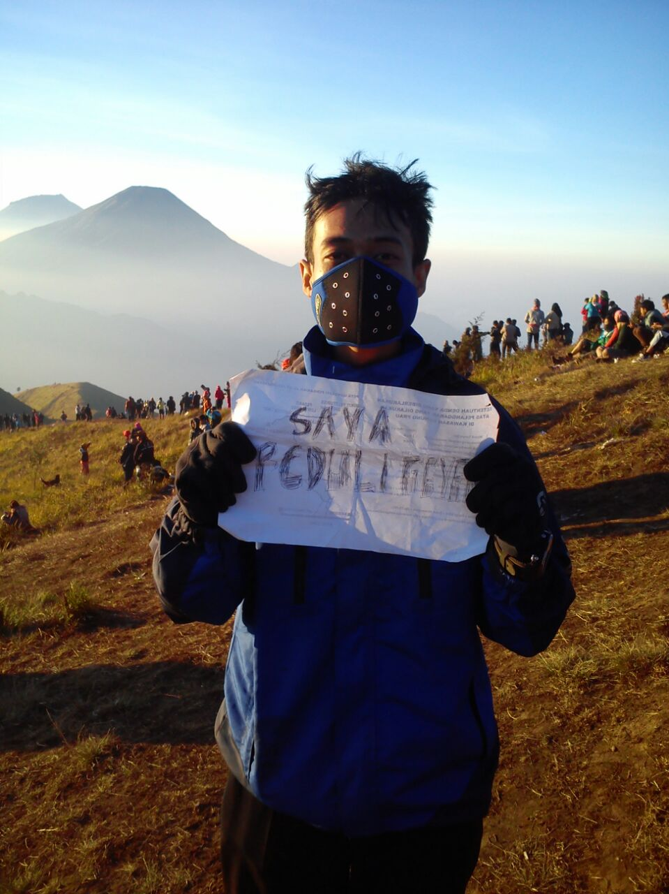
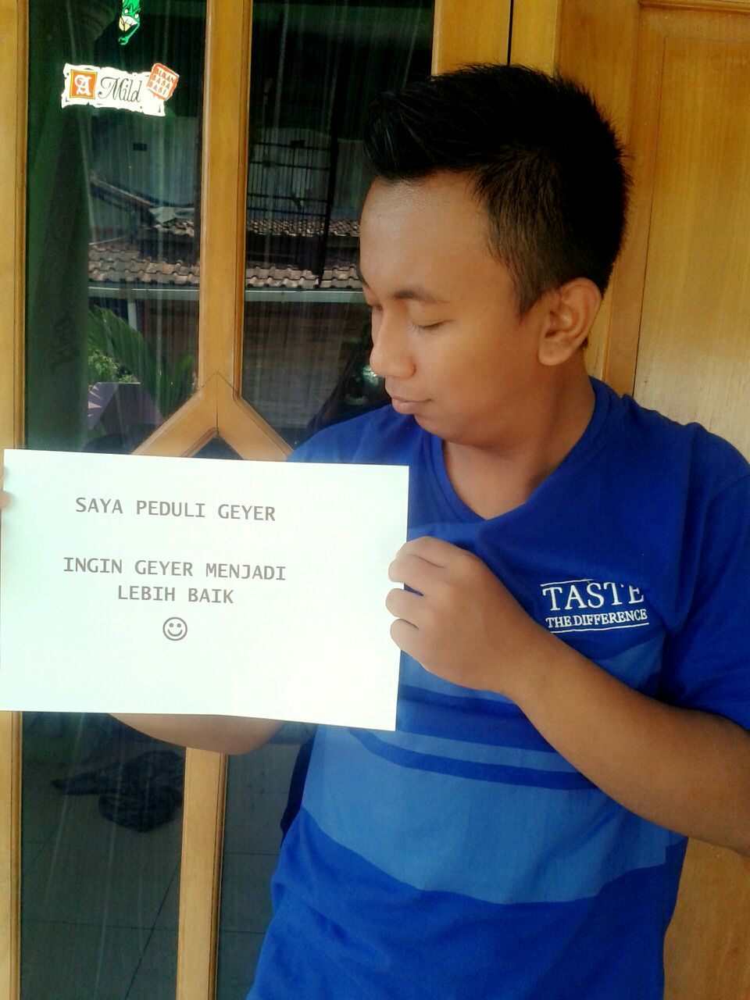

Peduli Geyer!!!
Home
About
Program
Anggota
Kontak
Peduli Geyer
Mari membuat geyer menjadi lebih baik!
Selanjutnya ...
News
Mereka yang telah ikut bergabung dan peduli geyer!!
Kamis, 2 Oktober 2014



